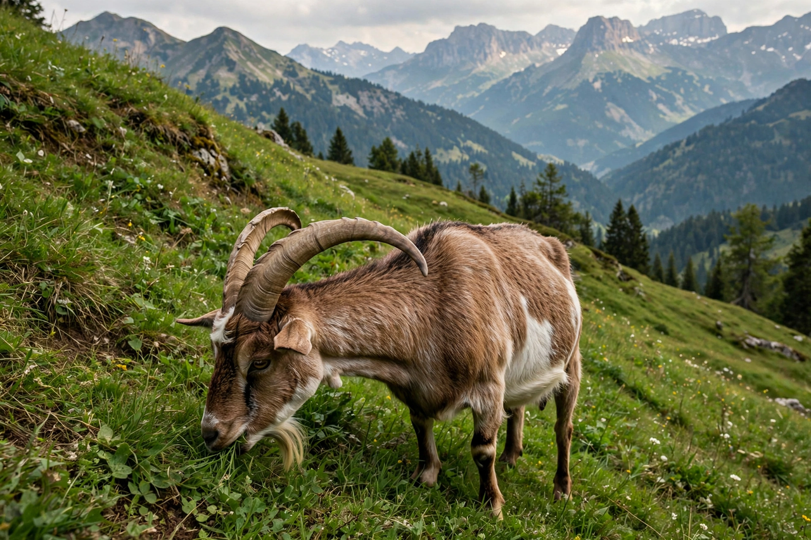

From Wikipedia, the free encyclopedia

| Goat | |
|---|---|
| Scientific name | Capra hircus (or Capra aegagrus hircus) |
| Family | Bovidae (subfamily Caprinae) |
| Domesticated | c. 10,000 years ago, Zagros Mountains (present-day Iran) |
| Global population | Over 1 billion (largest herds in China, India, Africa) |
| Uses | Milk, meat (chevon), fibre (mohair, cashmere), hides, brush clearing, pets |
| Terminology | Male: billy/buck; female: nanny/doe; young: kid |
The goat or domestic goat (Capra hircus) is a domesticated species of goat-antelope kept as livestock for its milk, meat, hair, and skin. It was domesticated from the wild bezoar ibex (Capra aegagrus) of Southwest Asia and Eastern Europe around 10,000 years ago, making it one of the earliest domesticated animals. Goats number over one billion worldwide and are especially important in arid and mountainous regions where other livestock fare poorly. A male goat is called a billy or buck, a female a nanny or doe, and a young goat a kid; goat meat is known as chevon or cabrito.
Genetic and archaeological evidence points to domestication in the Zagros Mountains of present-day Iran around 8000 BCE, among the earliest farming communities of the Fertile Crescent. Goats spread with Neolithic farmers across Europe, Asia, and Africa. Their hardiness, small size, and ability to subsist on scrub made them the archetypal poor farmer's livestock — "the poor man's cow." Columbus carried goats to the Americas in 1493, and explorers and sailors released them on islands worldwide as a living food supply, where feral goats often devastated native vegetation — a problem addressed by famous eradication campaigns, including on the Galápagos Islands. In mythology, goats pull Thor's chariot in Norse myth, the goat Amalthea nursed Zeus in Greek myth, and the zodiac sign Capricorn is the sea-goat.
Goats are ruminants with a four-chambered stomach adapted to digest coarse browse — leaves, twigs, and shrubs — which they prefer to grass; contrary to folklore, they are selective feeders, though curious mouthing of objects (and their tolerance of bitter and spiny plants) built their tin-can-eating reputation. Both sexes usually bear horns and beards; eyes have horizontal, rectangular pupils giving a wide field of view. Goats are agile climbers — domestic goats famously ascend trees (as in Morocco's argan trees) and steep dams — and sure-footed on cliffs inherited from their mountain ancestry. They are intelligent, social herd animals with individual personalities, able to learn names and solve simple puzzles; "fainting goats" (myotonic goats) stiffen and topple when startled due to a hereditary muscle condition. Gestation is about 150 days, usually producing twins.
There are over 300 distinct breeds, specialised by purpose:
| Purpose | Notable breeds / products |
|---|---|
| Dairy | Saanen, Alpine, Nubian, Toggenburg; goat's milk and cheeses such as chèvre, Sainte-Maure de Touraine, feta-style, and Norwegian brunost (geitost) |
| Meat | Boer (South Africa), Spanish, Kiko; goat is the most widely eaten red meat worldwide |
| Fibre | Angora (mohair), Cashmere goats (cashmere/pashmina), Pygora |
| Other | Pygmy and Nigerian Dwarf as pets; pack goats; targeted grazing ("goatscaping") for brush and invasive-plant control |
Goat's milk differs from cow's milk in smaller fat globules, different casein composition (often tolerated by some with cow-milk sensitivity, though not by those with true milk allergy), and a characteristic flavour from caproic and caprylic fatty acids — the acids named, in fact, from capra, the goat.